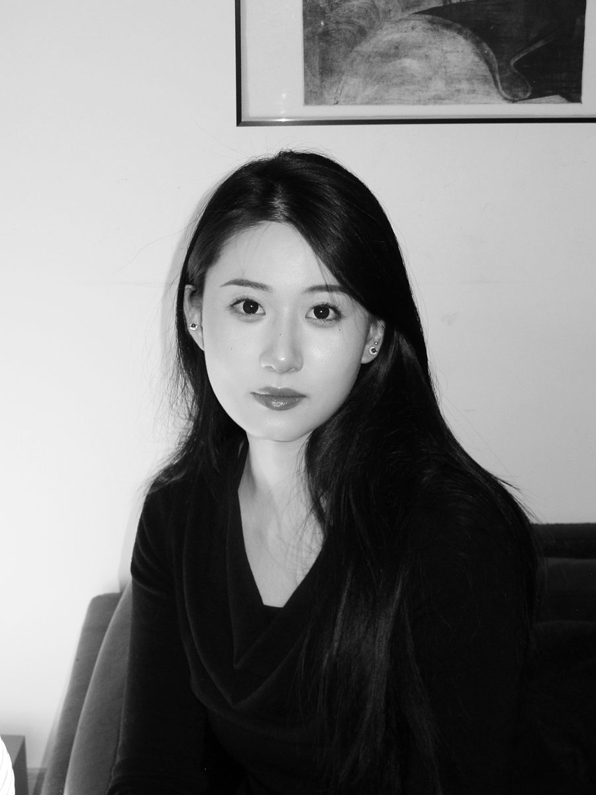

关于

个人简介
宁雨晰，艺术家，中国美术学院摄影系教师。其创作以摄影及影像为核心媒介，关注图像在不同技术条件下的生成、组织与观看机制，并持续研究传统摄影工艺与数字图像技术之间的关系。
其创作一方面从暗房、感光材料、曝光与遮挡等传统摄影方法出发，探索光如何介入图像建构，以及影像与物质、空间之间的关系；另一方面也将生成影像与数字档案等技术纳入实践，讨论图像如何被分类、重组、解释与再生产。
近年来，其研究进一步延伸至图像与自然、历史及政治之间的关系，关注视觉技术如何参与历史记忆、文化叙事与现实认知的形成，并由此讨论不同图像生产机制背后的知识体系、技术逻辑与观看方式。